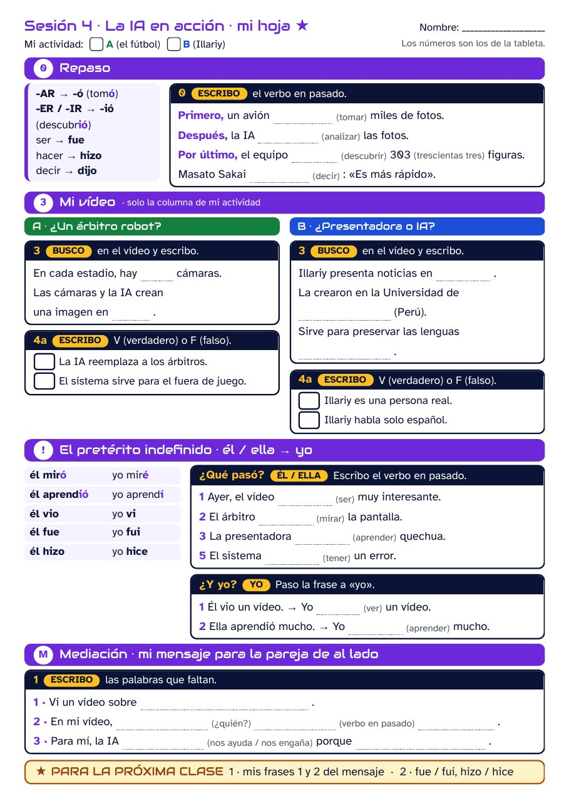

Todo se hace en la aplicación: no hay que imprimir nada para la clase. La versión con ayuda ★ se activa en la app (botón arriba a la derecha). La hoja ★ es solo para los alumnos que trabajan mejor en papel: mismos ejercicios, mismos números de etapa, palabras clave que hay que buscar y escribir.
Hoja ★ de apoyo (1 página)
